1080B62 catalytic converter - r + r
- Path
- Procedures > 10 ENGINE > 1080 EXHAUST EMISSION CONTROL SYSTEM > 1080B exhaust emission control system > 1080B62 catalytic converter - r + r
- Kind
- repair procedure (removal / refitting; the operation number is the code)
- Applies to
- engines: 1.6 TS , 1.8 TS, 2.0 JTS, 2.5 V6, 1.9 JTD 8v , 1.9 JTD 16v, 2.0 JTS, 2.4 JTD 10v, 2.4 JTD 20v; all production periods
- Interactive page
- https://sloeber94.github.io/elrnDB-a156/en/#/3237586
Applies to: engines: 2.5 V6; all production periods
 Removing
Removing
 Refitting
RefittingPosition the vehicle on the ramp.
Raise the car.
1. Undo the nuts and disconnect the catalytic converter from the manifold exhaust pipe.
2. Undo the bolts and disconnect the catalytic converter from the intermediate exhaust silencer.
3. Remove the catalytic converter together with the front gasket and rear sealing ring after releasing from the flexible mounting ring.
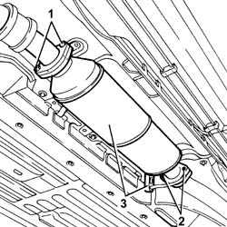
Applies to: engines: 2.5 V6; all production periods
Refitting
RemovingFit the catalytic converter complete wtih front gasket and rear sealing ring. Then secure to the flexible mounting ring.
Tighten the bolts securing the catalytic converter to the intermediate exhaust silencer.
Use a torque wrench to tighten the bolts securing the catalytic converter to the exhaust pipes which emerge from the manifolds.
 | Fastening | Component | Ø | Value (daNm) |
|---|---|---|---|---|
- | Nut | EXHAUST PIPE FROM MANIFOLD | M8 | 2.5 |
Lower the vehicle.
Remove the car from the ramps.
Applies to: engines: 1.6 TS , 1.8 TS; all production periods
Removing
RefittingPlace the car on a ramp.
Raise the car.
1. Undo both nuts (1a) securing catalytic converter ( 1b) to the section of the exhaust pipe attached to the engine, remove the gasket.
2. Undo both bolts securing the intermediate pipe section to the converter and remove the sealing ring.
3. Release the converter from the flexible mounting ring and remove.
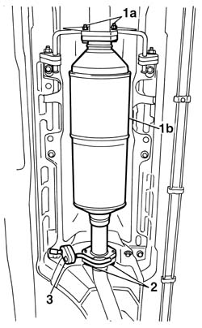
Applies to: engines: 1.6 TS , 1.8 TS; all production periods
Refitting
RemovingPosition the catalytic converter with the sealing ring and tighten both retaining bolts.
| Fastening | Component | Ø | Value (daNm) |
|---|---|---|---|---|
- | Bolt | CATALYTIC CONVERTER (ONE) | M8 | 2.28 - 2.76 |
Secure the flexible mounting ring to the catalytic converter bracket.
Tighten the nuts securing on the engine attachment side (after fitting a new gasket).
| Fastening | Component | Ø | Value (daNm) |
|---|---|---|---|---|
- | Nut | CATALYTIC CONVERTER (ONE) | M8 | 2.28 - 2.76 |
Applies to: engines: 1.6 TS , 1.8 TS; all production periods; only with equipment: Euro 3
Removing
RefittingPosition the vehicle on the ramp.
Ensure that the ignition key is in the OFF postition, then disconnect the battery negative terminal.
 | Name | Connector |
|---|---|---|
- | Battery |
1. Release the electrical wiring for the Lambda sensor from the fastenings on the bulkhead.
2. Undo and remove the Lambda sensor from the catalytic converter.
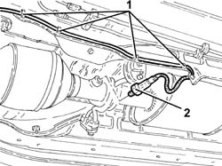
Applies to: engines: 1.6 TS , 1.8 TS; all production periods; only with equipment: Euro 3
1. Release the catalytic converter from the flexible mountings.
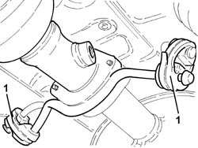
Applies to: engines: 1.6 TS , 1.8 TS; all production periods; only with equipment: Euro 3
1. Undo the nuts fixing the catalytic converter to the catalytic pre-converter.
2. Tighten the bolts fixing the catalytic converter to the exhaust silencer.
3. Remove the catalytic converter complete with gasket.
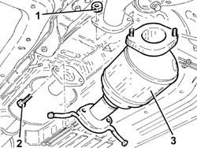
Applies to: engines: 1.6 TS , 1.8 TS; all production periods; only with equipment: Euro 3
Refitting
RemovingRefit the catalytic converter in its seat complete with gasket.
Tighten the bolts fixing the catalytic converter to the exhaust silencer to the recommended torque.
| Fastening | Component | Ø | Value (daNm) |
|---|---|---|---|---|
- | Bolt | CATALYTIC CONVERTER (ONE) | M8 | (Silencer side) 2.3 ÷ 2.8 |
Tighten the nuts fixing the catalytic converter to the catalytic pre-converter to the recommended torque.
| Fastening | Component | Ø | Value (daNm) |
|---|---|---|---|---|
- | Nut | CATALYTIC CONVERTER (ONE) | M8 | (Catalytic preconverter side) 2.3 ÷ 2.8 |
Secure the catalytic converter to the flexible mountings.
Place the Lambda sensor back in its housing and tighten it to the specified torque.
| Fastening | Component | Ø | Value (daNm) |
|---|---|---|---|---|
- | - | LAMBDA PROBE | M18 | (Catalytic converter side) 4.0 ÷ 5.0 |
Secure the lambda sensor electrical wiring to the fastenings on the bulkhead.
Connect the battery terminal (-).
Remove the car from the ramp.
Applies to: engines: 2.0 JTS, 2.0 JTS; all production periods
Removing
RefittingPosition the vehicle on the ramp.
Ensure that the ignition key is in the OFF position, then disconnect the negative battery terminal.
| Name | Connector |
|---|---|---|
- | Battery |
Drain the air conditioner coolant circuit 5040A10 Air conditioning refrigerant CIRCUIT - Draining and Refilling .
Proceed with removal 4450B04 right front wheel r r .
Proceed with removal 7055B54 under-engine guard - r r .
Proceed with removal 5040A20 air conditioner compressor - r+r - includes fluid level check and top up if necessary .
Proceed with removal 5040A26 compressor mount - r r .
Proceed with removal 1016A40 ignition coil cover on cylinder head- r+r .
Proceed with removal 1076A48 catalytic converter heat shield - r r .
1. Disconnect the electrical connection for the rear right Lambda sensor to the catalytic converter and release it from its mounting bracket.
| Name | Connector |
|---|---|---|
1 | Lambda sensor on catalyzer -2 |
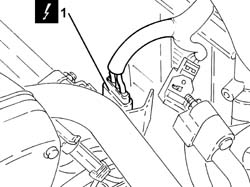
Applies to: engines: 2.0 JTS, 2.0 JTS; all production periods
1. Disconnect the electrical connection for the left Lambda sensor and release it from its mounting bracket.
| Name | Connector |
|---|---|---|
1 | Lambda sensor on pre-catalyzer |
2. Disconnect the electrical connection for the rear left Lambda sensor to the catalytic converter and release it from its mounting bracket.
| Name | Connector |
|---|---|---|
2 | Lambda sensor on catalyzer |
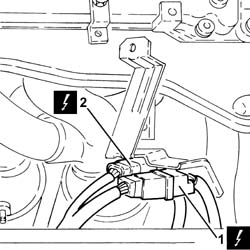
Applies to: engines: 2.0 JTS, 2.0 JTS; all production periods
1. Undo the nuts securing the catalytic converter to the cylinder head.
2. Undo the bolt securing the guide tube for the engine oil dipstick to the water pump rigid fluid inlet pipe.
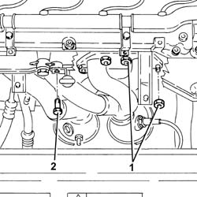
Applies to: engines: 2.0 JTS, 2.0 JTS; all production periods
1. Undo the bolts securing the catalytic convertor to the front section of the exhaust pipe.
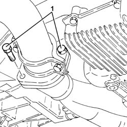
Applies to: engines: 2.0 JTS, 2.0 JTS; all production periods
1. Remove the catalytic converter (1a) complete with Lambda sensors (1b).
2. Remove the gasket between the catalytic converter and the front section of the exhaust pipe.
3. Remove the gasket between catalytic converter and cylinder head.
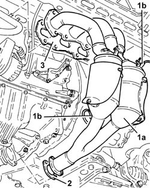
Applies to: engines: 2.0 JTS, 2.0 JTS; all production periods
Refitting
RemovingRefit the catalytic converter in its seat complete with gaskets.
1. Tighten the bolts fixing the catalytic converter to the front section of the exhaust pipe to the recommended torque.
| Fastening | Component | Ø | Value (daNm) |
|---|---|---|---|---|
1 | Bolt | CATALYTIC CONVERTER (ONE) | M8 | (Exhaust pipe front section side) 2.3 ÷ 2.8 |
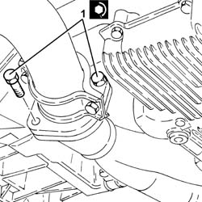
Applies to: engines: 2.0 JTS, 2.0 JTS; all production periods
1. Tighten the bolt securing the engine oil dipstick guide tube to the water pump fluid rigid fluid intake pipe.
2. Tighten the nuts fixing the catalytic converter to the cylinder head to the recommended torque.
| Fastening | Component | Ø | Value (daNm) |
|---|---|---|---|---|
2 | Nut | CATALYTIC CONVERTER (ONE) | M8 | (Cylinder head side) 2.3 ÷ 2.8 |
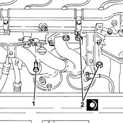
Applies to: engines: 2.0 JTS, 2.0 JTS; all production periods
Connect the electrical connection for the left rear Lambda sensor for the catalytic converter and secure it to the mounting bracket.
Connect the electrical connection for the left Lambda sensor and secure it to the mounting bracket.
Connect the electrical connection for the right rear Lambda sensor for the catalytic converter and secure it to the mounting bracket.
Proceed with refitting 1076A48 catalytic converter heat shield - r r .
Proceed with refitting 1016A40 ignition coil cover on cylinder head- r+r .
Proceed with refitting 5040A26 compressor mount - r r .
Proceed with refitting 5040A20 air conditioner compressor - r+r - includes fluid level check and top up if necessary .
Proceed with refitting 7055B54 under-engine guard - r r .
Proceed with refitting 4450B04 right front wheel r r .
Fill the air conditioner coolant circuit 5040A10 Air conditioning refrigerant CIRCUIT - Draining and Refilling .
Connect the negative (-) battery terminal.
Remove the car from the ramps.
Applies to: engines: 1.9 JTD 8v , 2.4 JTD 10v; all production periods
Removing
Refitting1076B50 exhaust pipe attachment to engine - r + r
1. Undo the bolts (1a) and remove the catalytic converter (1b) after releasing from flexible mount (1c).
2. Remove the seal.
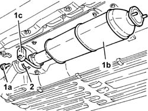
Applies to: engines: 1.9 JTD 8v , 2.4 JTD 10v; all production periods
Refitting
RemovingFit the catalytic converter complete with sealing ring and gasket, then support using the flexible mount.
Tighten the catalytic converter bolts on the rigid exhaust pipe side to the specified torque.
| Fastening | Component | Ø | Value (daNm) |
|---|---|---|---|---|
- | Bolt | CATALYTIC CONVERTER (ONE) | M8 | 2.0 - 2.5 |
Applies to: engines: 1.9 JTD 16v; all production periods
Removing
RefittingPosition the vehicle on the ramp.
1. Undo the nuts securing the catalytic convertor to the front section of the exhaust pipe.
2. Undo the bolts securing the catalytic converter to the rigid exhaust pipe section.
3. Remove the catalytic converter (3a) after having released it from the flexible mountings (3b).
Remove the gaskets.
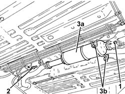
Applies to: engines: 1.9 JTD 16v; all production periods
Refitting
Removing1. Place the catalytic converter (1a) complete with gaskets in its housing and fasten it to the flexible mountings (1b).
2. Tighten the bolts securing the catalytic converter to the exhaust pipe rigid section to the specified torque.
| Fastening | Component | Ø | Value (daNm) |
|---|---|---|---|---|
2 | Bolt | CATALYTIC CONVERTER (ONE) | M8 | (Rigid pipe side) 2.3 ÷ 2.8 |
3. Tighten the nuts fixing the catalytic converter to the front section of the exhaust pipe to the recommended torque.
| Fastening | Component | Ø | Value (daNm) |
|---|---|---|---|---|
3 | Nut | CATALYTIC CONVERTER (ONE) | M8 | (Exhaust pipe front section side) 2.3 ÷ 2.8 |
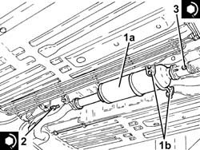
Applies to: engines: 1.9 JTD 16v; all production periods
Remove the car from the ramps.
Applies to: engines: 2.4 JTD 20v; all production periods
Removing
RefittingPosition the vehicle on the ramp.
Proceed with removal 7055B54 under-engine guard - r r .
1. Undo the bolts securing the catalytic
2. Undo the nuts securing the catalytic converter, on the side of the precatalyzer and catalyzer exhaust pipe.
3. Remove the catalytic converter (3a) after having released it from the flexible mountings (3b).
Remove the front gasket.
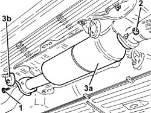
Applies to: engines: 2.4 JTD 20v; all production periods
Refitting
Removing1. Place the catalytic converter (1a) complete with front gasket in its housing and fasten it to the flexible mounting (1b).
2. Tighten the nuts fixing the catalytic converter to the front section of the exhaust pipe to the recommended torque.
| Fastening | Component | Ø | Value (daNm) |
|---|---|---|---|---|
2 | Nut | CATALYTIC CONVERTER (ONE) | M8 | (Exhaust pipe front section side) 2.3 ÷ 2.8 |
3. Tighten the bolts securing the catalytic converter to the exhaust pipe rigid section to the specified torque.
| Fastening | Component | Ø | Value (daNm) |
|---|---|---|---|---|
3 | Bolt | CATALYTIC CONVERTER (ONE) | M8 | (Rigid pipe side) 2.3 ÷ 2.8 |
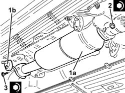
Applies to: engines: 2.4 JTD 20v; all production periods
Proceed with refitting 7055B54 under-engine guard - r r .
Remove the car from the ramps.
Topics linked from this page (12)
- 1016A40 ignition coil cover on cylinder head- r+r
- 1076A48 catalytic converter heat shield - r r
- 1076B50 exhaust pipe attachment to engine - r + r
- 4450B04 right front wheel r r
- 5040A10 Air conditioning refrigerant CIRCUIT - Draining and Refilling
- 5040A20 air conditioner compressor - r+r - includes fluid level check and top up if necessary
- 5040A26 compressor mount - r r
- 7055B54 under-engine guard - r r
- A1B Battery ( BATTERY NEGATIVE )
- K15 Lambda sensor on pre-catalyzer
- K17 Lambda sensor on catalyzer
- K18 Lambda sensor on catalyzer -2
Topics that link to this page (33)
- B10 ENGINE DOES NOT START / UNDER NO CIRCUMSTANCES
- B20 ENGINE STARTS, AND CUTS OUT STRAIGHT AWAY
- D05 ENGINE DOES NOT PRODUCE BEST PERFORMANCE
- W01 HIGH CO EMISSIONS
- Z55 CATALYZER ERROR
- 1004B10 power unit with manual gearbox - r + r
- 1008A44 rear rigid mount - r r
- 1016C10 cylinder head - r + r and replace gasket
- 1020A20 crank case oil sump - r + r clean seals for sealant application
- 1020D10 front crank shaft oil seal cover - r + r and replace seals with timing belt removed
- 1020D15 Crankshaft oil seal FRONT COVER - R.R. and Replace. gaskets on engines with oil pump on crankshaft and heat exchanger
- 1020D26 flywheel side oil seal cover - r+r
- 1020D36 flywheel end oil seal - replace for manual gearbox with hydraulic selection versions
- 1020D38 flywheel side oil seal - replace
- 1024B10 engine flywheel - r + r for versions with manual gearbox
- 1024B11 engine flywheel - r r for manual gearbox with hydraulic selection versions
- 1028H10 connecting rod and piston set - r r
- 1076A48 catalytic converter heat shield - r r
- 1076B10 exhaust pipe assembly - r + r
- 1076B12 exhaust pipe assembly r+r emission control versions
- 1076B18 rigid section of exhaust pipe between catalytic converter and silencer - r + r
- 1076B34 front catalytic converter attachment seal - replace
- 1076B36 cat rear sealing ring - replace
- 1080B60 LAMBDA SENSOR - R.R.
- 1084B26 emgine oil intake duct - r r
- 1810A20 clutch - r + r
- 1810A28 clutch - r r for manual gearbox with hydraulic selection versions
- 2110A10 manual gearbox and differential - r + r
- 2110A11 manual gearbox with differential - r r for versions with hydraulic selection
- 2110C24 seals for gearbox input shaft - r r for manual gearbox with hydraulic selection versions
- 2125C30 gear engagement cable - r r
- 2125C70 gearbox/brake lever mount - r r
- 4130B40 outlet pipe from pump to power steering case r r